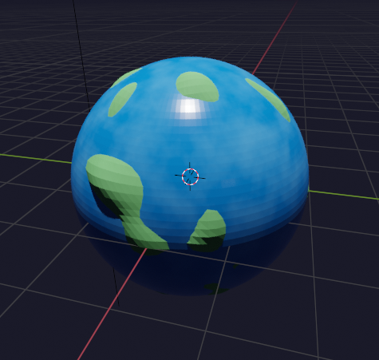

About the Centerfuge
The Centerfuge is a central, spinning cylindrical vortex at the heart of a modern home. This system continuously rotates to sort, distribute, and manage materials essential for home maintenance and sustainability. It performs various functions, such as building and repairing structures, creating clothing, and processing food, while hyperbolating waste.
Hyperbolation Process
Hyperbolation is the unique process of wrapping materials in layered yarn-like balls, known as gnotobiotic hyperballs or cognets. This packaging helps label, store, and utilize materials effectively within the Centerfuge.
Small World Generator
This Python code snippet demonstrates how to create a miniature spherical world in Blender. The script generates an outer water sphere and an inner terrain sphere with varied textures for a more lifelike appearance.

import bpy
import bmesh
import random
import math
from mathutils import Vector, noise
# Clear existing objects
bpy.ops.object.select_all(action='SELECT')
bpy.ops.object.delete()
def create_outer_sphere():
# Create smooth outer sphere (ocean)
bpy.ops.mesh.primitive_uv_sphere_add(radius=2.0, location=(0, 0, 0))
outer_sphere = bpy.context.active_object
outer_sphere.name = 'OuterSphere'
# Add subdivision surface modifier
subsurf = outer_sphere.modifiers.new(name="Subsurf", type='SUBSURF')
subsurf.levels = 2
# Create ocean blue material
blue_mat = bpy.data.materials.new(name="OceanMaterial")
blue_mat.use_nodes = True
nodes = blue_mat.node_tree.nodes
nodes["Principled BSDF"].inputs["Base Color"].default_value = (0.0, 0.3, 0.8, 1)
nodes["Principled BSDF"].inputs["Roughness"].default_value = 0.2
nodes["Principled BSDF"].inputs["Specular"].default_value = 0.8
# Add subtle wave texture
wave_tex = nodes.new('ShaderNodeTexNoise')
wave_tex.inputs["Scale"].default_value = 8.0
wave_tex.inputs["Detail"].default_value = 6.0
# Add color ramp for water variation
color_ramp = nodes.new('ShaderNodeValToRGB')
color_ramp.color_ramp.elements[0].position = 0.4
color_ramp.color_ramp.elements[0].color = (0.0, 0.2, 0.7, 1)
color_ramp.color_ramp.elements[1].color = (0.1, 0.4, 0.9, 1)
blue_mat.node_tree.links.new(wave_tex.outputs["Fac"], color_ramp.inputs["Fac"])
blue_mat.node_tree.links.new(color_ramp.outputs["Color"], nodes["Principled BSDF"].inputs["Base Color"])
outer_sphere.data.materials.append(blue_mat)
return outer_sphere
def create_inner_sphere():
# Create inner crumpled sphere (land)
bpy.ops.mesh.primitive_uv_sphere_add(radius=1.8, location=(0, 0, 0))
inner_sphere = bpy.context.active_object
inner_sphere.name = 'InnerSphere'
# Create bmesh for detailed manipulation
bm = bmesh.new()
bm.from_mesh(inner_sphere.data)
# Generate random seed for unique crumpling pattern
random_seed = random.randint(0, 1000)
# Add randomized noise displacement to vertices
for v in bm.verts:
# Generate noise based on vertex position and random seed
noise_val = noise.noise(v.co * 2.0 + Vector((random_seed, random_seed, random_seed)))
# Add secondary noise layer for more variation
noise_val2 = noise.noise(v.co * 4.0 + Vector((-random_seed, random_seed, -random_seed))) * 0.5
displacement = (noise_val + noise_val2) * 0.4
v.co += v.normal * displacement
# Update mesh
bm.to_mesh(inner_sphere.data)
bm.free()
# Add subdivision surface modifier
subsurf = inner_sphere.modifiers.new(name="Subsurf", type='SUBSURF')
subsurf.levels = 2
# Add displacement modifier for additional detail
displace = inner_sphere.modifiers.new(name="Displace", type='DISPLACE')
displace.strength = 0.2
# Create terrain material
terrain_mat = bpy.data.materials.new(name="TerrainMaterial")
terrain_mat.use_nodes = True
nodes = terrain_mat.node_tree.nodes
links = terrain_mat.node_tree.links
# Create more complex terrain texture
noise1 = nodes.new('ShaderNodeTexNoise')
noise1.inputs["Scale"].default_value = 5.0
noise1.inputs["Detail"].default_value = 8.0
noise1.inputs["W"].default_value = random_seed * 0.1 # Use random seed for variation
noise2 = nodes.new('ShaderNodeTexNoise')
noise2.inputs["Scale"].default_value = 10.0
noise2.inputs["Detail"].default_value = 4.0
noise2.inputs["W"].default_value = -random_seed * 0.1 # Different variation
# Mix noises
mix = nodes.new('ShaderNodeMixRGB')
mix.blend_type = 'MULTIPLY'
mix.inputs["Fac"].default_value = 0.5
# Create color ramp for terrain variation
color_ramp = nodes.new('ShaderNodeValToRGB')
color_ramp.color_ramp.elements[0].position = 0.3
color_ramp.color_ramp.elements[0].color = (0.1, 0.4, 0.1, 1) # Dark green
color_ramp.color_ramp.elements[1].position = 0.7
color_ramp.color_ramp.elements[1].color = (0.2, 0.6, 0.2, 1) # Light green
# Add some brown/mountain variations
mountain_ramp = nodes.new('ShaderNodeValToRGB')
mountain_ramp.color_ramp.elements[0].position = 0.6
mountain_ramp.color_ramp.elements[0].color = (0.2, 0.6, 0.2, 1) # Green
mountain_ramp.color_ramp.elements[1].color = (0.4, 0.3, 0.2, 1) # Brown
# Connect nodes
links.new(noise1.outputs["Fac"], mix.inputs[1])
links.new(noise2.outputs["Fac"], mix.inputs[2])
links.new(mix.outputs["Color"], color_ramp.inputs["Fac"])
links.new(mix.outputs["Color"], mountain_ramp.inputs["Fac"])
# Mix terrain colors
mix_terrain = nodes.new('ShaderNodeMixRGB')
mix_terrain.inputs["Fac"].default_value = 0.5
links.new(color_ramp.outputs["Color"], mix_terrain.inputs[1])
links.new(mountain_ramp.outputs["Color"], mix_terrain.inputs[2])
links.new(mix_terrain.outputs["Color"], nodes["Principled BSDF"].inputs["Base Color"])
# Add roughness variation
nodes["Principled BSDF"].inputs["Roughness"].default_value = 0.8
inner_sphere.data.materials.append(terrain_mat)
return inner_sphere
def setup_scene():
# Create camera
bpy.ops.object.camera_add(location=(6, -6, 4))
camera = bpy.context.active_object
camera.rotation_euler = (math.radians(60), 0, math.radians(45))
# Create key light (sun)
bpy.ops.object.light_add(type='SUN', location=(5, 5, 10))
sun = bpy.context.active_object
sun.data.energy = 5.0
# Add fill light for better details
bpy.ops.object.light_add(type='AREA', location=(-4, -4, 2))
fill = bpy.context.active_object
fill.data.energy = 2.0
# Set up world background
world = bpy.context.scene.world
if not world:
world = bpy.data.worlds.new("World")
bpy.context.scene.world = world
world.use_nodes = True
world.node_tree.nodes["Background"].inputs["Color"].default_value = (0.01, 0.01, 0.02, 1)
# Create the scene
outer_sphere = create_outer_sphere()
inner_sphere = create_inner_sphere()
setup_scene()
# Set render engine to Cycles for better quality
bpy.context.scene.render.engine = 'CYCLES'
bpy.context.scene.cycles.samples = 128
# Set active camera
bpy.context.scene.camera = bpy.data.objects["Camera"]